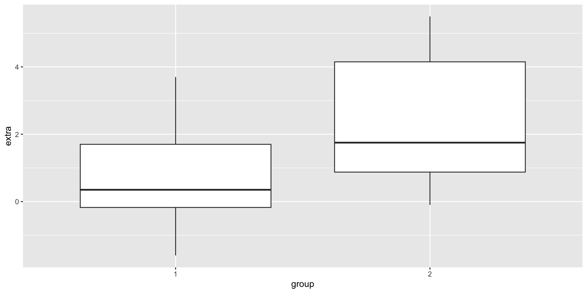
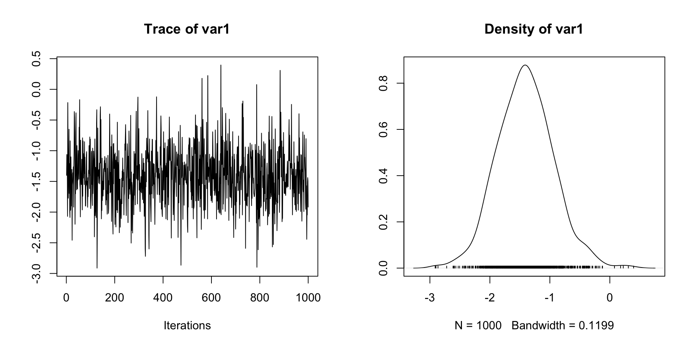

\[ \newcommand{\mc}[1]{\mathcal{#1}} \newcommand{\R}{\mathbb{R}} \newcommand{\E}{\mathbb{E}} \renewcommand{\P}{\mathbb{P}} \newcommand{\var}{{\rm Var}} % Variance \newcommand{\mse}{{\rm MSE}} % MSE \newcommand{\bias}{{\rm Bias}} % MSE \newcommand{\cov}{{\rm Cov}} % Covariance \newcommand{\iid}{\stackrel{\rm iid}{\sim}} \newcommand{\ind}{\stackrel{\rm ind}{\sim}} \renewcommand{\choose}[2]{\binom{#1}{#2}} % Choose \newcommand{\chooses}[2]{{}_{#1}C_{#2}} % Small choose \newcommand{\cd}{\stackrel{d}{\rightarrow}} \newcommand{\cas}{\stackrel{a.s.}{\rightarrow}} \newcommand{\cp}{\stackrel{p}{\rightarrow}} \newcommand{\bin}{{\rm Bin}} \newcommand{\ber}{{\rm Ber}} \DeclareMathOperator*{\argmax}{argmax} \DeclareMathOperator*{\argmin}{argmin} \]
False rejection (Type I error) and False acceptance (Type II error)
The decision space is \(\mc{D} = \{\text{accept}, \text{reject}\} = \{0, 1\}\).
A typical loss is the 0-1 loss \[ L(\theta, d)= \begin{cases}1 & \text { if } d = \mathbb{I}_{\Theta_0}(\theta) \\ 0 & \text { otherwise }\end{cases}. \]
The frequentist risk is \[\begin{align*} R(\theta, \delta) & = \E L(\theta, \delta(X)) = \P(\delta(X) = 1 \mid \theta \in \Theta_0) + \P(\delta(X) = 0 \mid \theta \notin \Theta_0)\\ & = \text{Type I error} + \text{Type II error} \end{align*}\]
Under this loss, the Bayesian solution \[ \varphi^\pi(x)= \begin{cases}1 & \text { if } \P^\pi\left(\theta \in \Theta_1 \mid x\right) > \P^\pi\left(\theta \in \Theta_0 \mid x\right) \\ 0 & \text { otherwise }\end{cases}. \]
This is a dataset which shows the effect of two soporific drugs (increase in hours of sleep compared to control) on 10 patients.
We want to see the difference in efficacy of the drugs.
Bayes factor analysis
--------------
[1] Alt., r=0.707 : 17.25888 ±0%
Against denominator:
Null, mu = 0
---
Bayes factor type: BFoneSample, JZSPriors:
You can change the priors and see how the results change. This might require you to implement the sampling process yourself.
To check the quality of the posterior samples, you can ask the function to return posterior rather than the Bayes factor.
